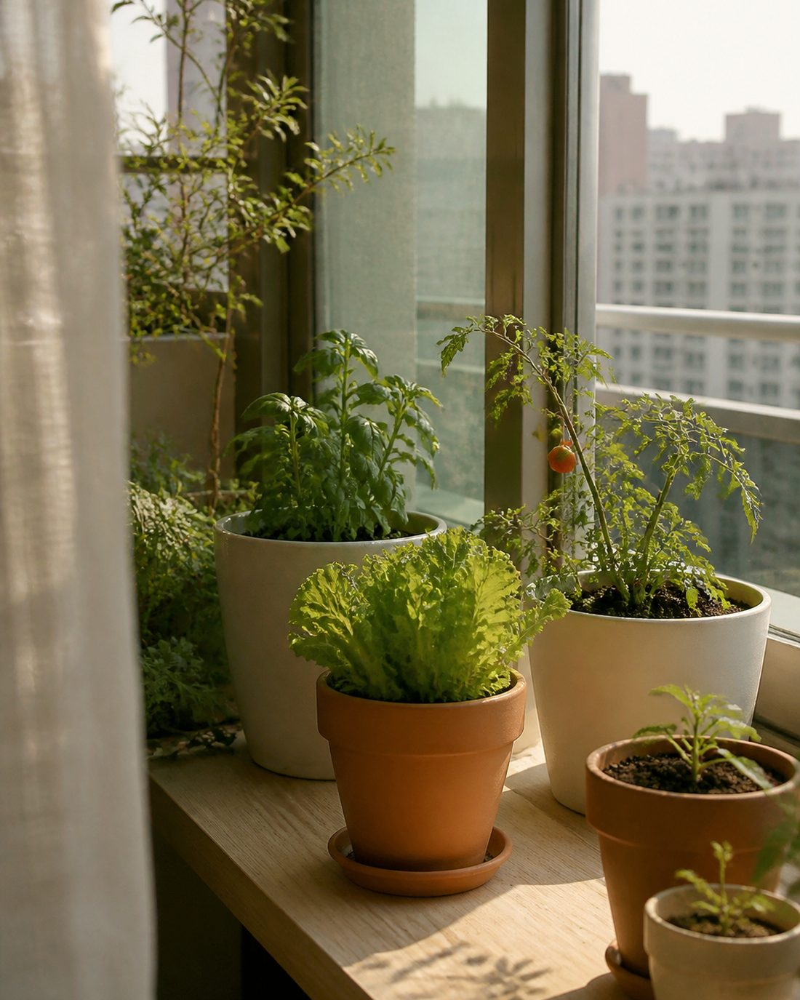
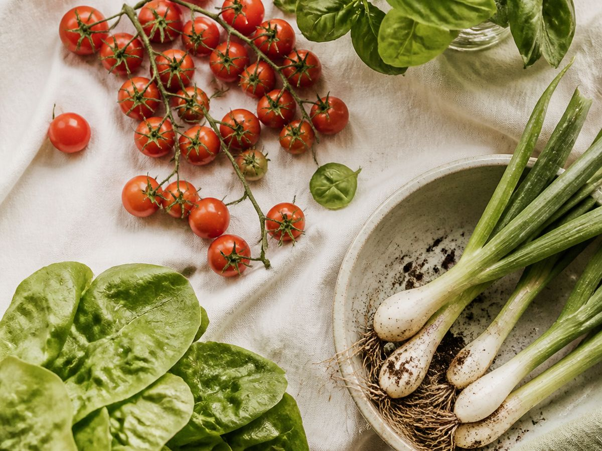

무료 텃밭 계산기 · 회원가입 없음
베란다 텃밭,
언제 심고 언제 물 줄까?
내 창가와 베란다의 햇빛, 그리고 이번 달에 맞는 작물을 골라 드려요. 심은 날을 넣으면 싹트는 날 · 첫 수확 예정일 · 오늘 물 줄 날까지 계산해 드립니다.
- 작물 12가지
- 중부지방 기준
- 휴대폰·PC 모두

01
내 텃밭 조건으로 작물 찾기
세 가지만 고르면 지금 심기 좋은 작물을 순서대로 보여 드려요.
02
파종·물주기·수확 D-day 계산
작물과 심은 날을 고르면 날짜로 계산해 드려요. 저장해 두면 물 줄 날을 계속 기억합니다.
03
작물별 파종 시기 한눈에
초록 칸이 씨앗을 뿌리거나 모종을 심기 좋은 달이에요. 이번 달 열은 진하게 표시됩니다.
04
계절 체험 & 수확 레시피
그 달에 딴 채소로 무엇을 해 먹을지까지. K푸드농장 블로그에 계절 레시피가 이어집니다.

수확한 날의 한 접시
딴 채소는 그날 먹는 게 가장 맛있어요
방울토마토는 따서 바로 소금 한 꼬집, 바질은 잎만 손으로 뜯어 올리브오일에. 상추는 물에 담갔다 물기를 털면 아삭함이 살아납니다. 남으면 신문지에 싸 냉장고 야채칸에 두세요.
K푸드농장 계절 레시피 보기06
자주 묻는 질문
파종 시기는 어떤 기준인가요?
한국 중부지방(수도권·충청)의 평균 기온을 기준으로 잡았어요. 남부지방은 1~2주 빠르게, 강원 산지는 1~2주 늦게 보시면 됩니다. 실내 창가·베란다는 바깥보다 따뜻해 씨앗 발아가 조금 빠른 편이에요.
베란다에서 물은 얼마나 자주 줘야 하나요?
작물마다 다르지만 기본은 “겉흙 2~3cm가 마르면 흠뻑”이에요. 계산기는 작물·계절·공간(실내/베란다/옥상)을 반영해 며칠 간격인지 알려 줍니다. 여름엔 1~2일, 겨울엔 5~7일에 한 번으로 크게 차이가 나요.
겨울에도 베란다에서 키울 수 있나요?
됩니다. 다만 겨울 베란다는 해가 짧고 흙이 늦게 말라요. 상추·시금치·대파 같은 잎채소를 창가 가장 밝은 자리에 두고, 물은 흙을 만져 보고 마를 때만 주세요. 열매채소는 봄까지 기다리는 편이 좋아요.
씨앗과 모종 중 무엇을 사야 하나요?
처음이라면 모종을 권해요. 상추·루콜라는 씨앗도 쉽지만, 방울토마토·고추·딸기·오이는 모종으로 시작하면 2~3주를 아낄 수 있어요. 씨앗은 발아까지 물 관리가 필요합니다.
계산된 수확일은 정확한가요?
같은 작물이라도 햇빛·기온·화분 크기에 따라 1~3주 차이가 나요. 계산기는 평균값을 알려 주는 도구이고, 잎색과 줄기 굵기를 보며 조절하시면 됩니다.